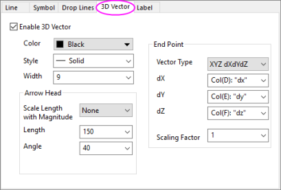
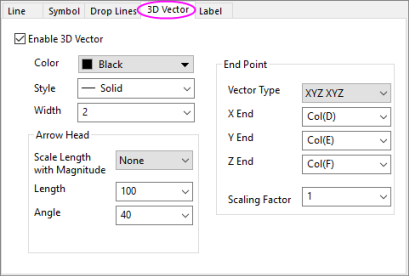

Seit Origin 8.5 können 3D-Vektordiagramme aus XYZ XYZ-Daten erstellt werden, die den Start- und Endpunkt eines Vektors festlegen. Alternativ können Sie ein 3D-Vektordiagramm aus XYZ dXdYdZ-Daten erstellen, das den Vektor dXdYdZ vom Startpunkt XYZ aus zeichnet. Nachdem Sie ein 3D-Vektordiagramm erstellt haben, können Sie Folgendes ganz einfach auf der Registerkarte 3D-Vektor tun:
|  |  |
| Die Registerkarte 3 Vektor für 3D-Vektordiagramme XYZ dXdYdZ | Die Registerkarte 3 Vektor für 3D-Vektordiagramme XYZ dXdYdZ |
Legt fest, ob 3D-Vektoren aktiviert sind. Wenn Sie ein 3D-Vektordiagramm über die Symbolleiste oder das Hauptmenü erstellt haben, wird das Kontrollkästchen automatisch aktiviert.
Wählen Sie aus der Schaltfläche Farbe eine Vektorfarbe aus.
Wählen Sie Durchgezogene Linie (Standard) oder eine der gestrichelten/gepunkteten Linienstile.
Geben Sie in das Auswahlfeld Breite die gewünschte Vektorbreite ein oder wählen Sie diese hier aus. Die Länge wird in Punkten angegeben.
| Länge mit Betrag skalieren |
Skaliert die Pfeilspitzen entsprechend der Betragsänderungen der Vektoren. Verfügbare Optionen sind:
|
|---|---|
| Länge |
Festlegen der Länge von Pfeilspitzen Die Länge wird in Punkten angegeben. |
| Winkel |
Festlegen der Winkel der Pfeilspitzen in Grad |
| Geschlossen/Offen |
Wählen Sie die Option Geschlossen, um ausgefüllte Pfeilspitzen anzuzeigen. Wählen Sie die Option Offen, um nicht ausgefüllte Pfeilspitzen (transparent) anzuzeigen. |
| Vektortyp | Legt fest, ob ein 3D-Vektordiagramm XYZ XYZ oder ein 3D-Vektordiagramm XYZ dXdYdZ erstellt wird. |
|---|---|
| X Ende | Diese Option ist nur verfügbar, wenn XYZ XYZ in der Auswahlliste Vektortyp ausgewählt wurde. Mit dieser Option können Sie die Spalte auswählen, die die X-Werte für die Endpunkte in dem Auswahlmenü X-Ende enthält. |
| Y Ende | Diese Option ist nur verfügbar, wenn XYZ XYZ in der Auswahlliste Vektortyp ausgewählt wurde. Mit dieser Option können Sie die Spalte auswählen, die die Y-Werte für die Endpunkte in dem Auswahlmenü Y-Ende enthält. |
| Z Ende | Diese Option ist nur verfügbar, wenn XYZ XYZ in der Auswahlliste Vektortyp ausgewählt wurde. Mit dieser Option können Sie die Spalte auswählen, die die Z-Werte für die Endpunkte in dem Auswahlmenü Z-Ende enthält. |
| dX | Diese Option ist nur verfügbar, wenn XYZ dXdYdZ in der Auswahlliste Vektortyp ausgewählt wurde. Mit ihr können Sie die X-Komponente des dXdYdZ-Vektors auswählen. |
| dY | Diese Option ist nur verfügbar, wenn XYZ dXdYdZ in der Auswahlliste Vektortyp ausgewählt wurde. Mit ihr können Sie die Y-Komponente des dXdYdZ-Vektors auswählen. |
| dZ | Diese Option ist nur verfügbar, wenn XYZ dXdYdZ in der Auswahlliste Vektortyp ausgewählt wurde. Mit ihr können Sie die Z-Komponente des dXdYdZ-Vektors auswählen. |
| Skalierungsfaktor |
Wählen Sie oder geben Sie einen Wert ein, mit dem die Länge der Vektoren skaliert wird. Tragen Sie beispielsweise 0.5 ein, um die Vektoren mit der Hälfte ihrer ursprünglichen Länge zu zeichnen. |